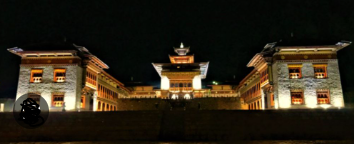

How Social Media is Changing Bhutanese Society
Social media helps Bhutanese people connect with the world and share their traditions online. Young people can learn new skills, promote Bhutanese culture, and communicate easily with friends and family. Educational videos and online learning platforms also help students gain knowledge and information quickly.

Excessive use of social media can reduce communication within families and distract students from studies. Some young people become more influenced by foreign lifestyles and may slowly forget traditional Bhutanese values, language, and dress.
Social media should be used responsibly. Bhutanese people can enjoy modern technology while still respecting traditional culture. Schools, parents, and communities should encourage young people to preserve Bhutanese identity and values.